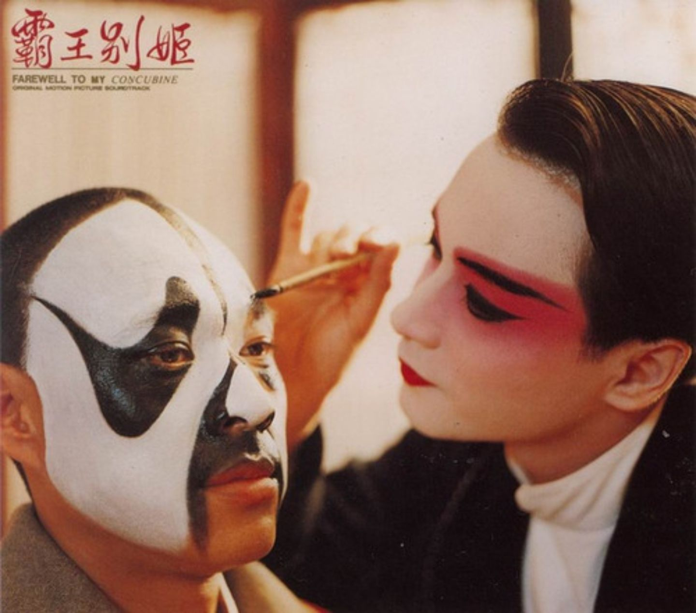

动乱结束后，中国进入改革开放，传统文化开始复苏，而历尽沧桑的程蝶衣和段小楼在十一年后也再演《霸王别姬》，蝶衣情感依旧，却蓦地被段小楼提醒：自己原来终究是男儿。是的，自己是男儿，对段小楼的爱情都不过是一场美好而痛心的奢梦，终于梦醒，却将身心都已倾献。不愿梦醒的蝶衣宁愿像虞姬一样，永远倒在血染的爱情里──从一而终，他用自己送给段小楼的宝剑自刎了。
动乱结束后，中国进入改革开放，传统文化开始复苏，而历尽沧桑的程蝶衣和段小楼在十一年后也再演《霸王别姬》，蝶衣情感依旧，却蓦地被段小楼提醒：自己原来终究是男儿。是的，自己是男儿，对段小楼的爱情都不过是一场美好而痛心的奢梦，终于梦醒，却将身心都已倾献。不愿梦醒的蝶衣宁愿像虞姬一样，永远倒在血染的爱情里──从一而终，他用自己送给段小楼的宝剑自刎了。

电影《霸王别姬》（英文：Farewell My Concubine）改编自李碧华同名小说，由陈凯歌执导，张国荣、张丰毅、巩俐主演。 影片叙述了伶人程蝶衣对国粹艺术的执著，进而投影出历史与文化在大时代的演变下，造就的激荡与人生。作为华语影坛的一款旗舰级作品，《霸王别姬》不光做到了“奇”，还做到了“整”，它并不是一部纯粹的写意电影，而同时具有清晰成熟的叙事构架，我们把它当成一首美丽凄婉的诗，或者一本引人入胜的小说，都同样成立。 
故事先从扮演霸王与虞姬的开头先破题，并描述两人因故已经多年没有合作，随后故事回到大清刚亡，民国初期的年间，小豆子的母亲身为窑姐，无力抚养孩子的她，只好狠心将小豆子送到梨园谋生。古时戏班训练手段严苛残忍，身世不干净的小豆子既要忍受师傅好心却暴力的训练，又遭同伴孤立，还好有大师兄小石头帮扶，才一天天挺了过来。在保护与被保护中，二人的关系超越朋友，超越兄弟。
天生斯文秀气的小豆子被选作旦角，却分不清假戏与真实生活，不愿在戏中“承认”自己是女儿身，几次遭师傅毒打。终于，在另一名戏童的找寻冰糖葫芦的引诱下，小豆子出逃，而一心疼爱他的小石头也不忍见他受罪，所以冒死相助。成功逃脱的小豆子偶遇京戏名角，听了一出《霸王别姬》，意识到只有苦练才能成就艺术的他返回戏班。戏班里，小石头正因放走小豆子二人的事挨打，为保护师哥，小豆子决然担下责任，而师哥不忍看小豆子挨打竟与师傅打斗。混乱中，与小豆子一同逃走的戏童因惧怕刑罚而自尽。最终，经历生死之劫的小豆子明白了师傅的苦心教诲：“人，得自个儿成全自个儿。要想人前显贵，必得人后受罪！”的铁石心肠教育。可是，他仍分不清假戏与真实生活，总固执地念错戏文，在连他最爱的师哥都狠狠罚斥他要他“承认”自己是女儿身后（事实上，是边拿烟斗插到嘴巴里乱搅边骂，是牵扯到佛洛伊德棍棒理论）他在潜意识里彻底相信自己就是女儿身。那个时候的戏子人视为下三滥，小豆子在一次演出后被晚清的宦官凌辱，悲痛中，偶遇弃婴，师傅认为人本有自己的命，但感到同病相怜的小豆子执意将他带回戏班，却不知这个孩子终成祸患。
春去秋来，几年后，小豆子与师哥合演的《霸王别姬》已经名震京师，并深得当时懂得雅致的财主袁四爷赏识，获得不少文物珍宝，北平街头也出现了许多摩登的服务。小豆子艺名程蝶衣，对师哥的感情正如虞姬──从一而终，而艺名段小楼的师哥只把蝶衣当弟弟，不仅不懂他的暧昧，更在冲动下答应要娶同样命运多舛的风尘女子菊仙。蝶衣随即和菊仙争风吃醋。在意识到大大咧咧的师哥对他们俩的过去非常淡漠后，蝶衣欲与段小楼决裂，却又在段小楼惹了侵略中国的日本兵而被关押后，为救他而委身给热爱京剧的军官青木唱戏，因而日本军决定对此不予追究，但反遭段小楼误会。而菊仙违背了与蝶衣的约定成婚，而蝶衣则在绝望中投向此时身边唯一欣赏他的袁四爷，任自己沉沦。二人斗气下戏剧接近停摆，被师傅教训要他们和好。后来师傅猝死，蝶衣和段小楼两人又重新收养了蝶衣多年前带回来戏班的弃婴，勉强和好回复表演活动。中日抗战结束后，两人被迫给一群无纪律无教养的国民党士兵表演，因蝶衣遭士兵调戏，段小楼告知士兵日本人也不曾如此胡闹，此言一出与士兵严重冲突，混乱中不但菊仙被打到流产，蝶衣也因此遭到检举为汉奸被捕。段小楼倾力营救蝶衣，低声下气去求袁四爷，要蝶衣替日本人唱戏一事说谎，苟且求释，蝶衣始终不屈，认为日本赏识京剧，所幸因其技艺被民国高官营救。
1949年，国民政府即将败退，因为两人的绝艺战后没有受到重视，程蝶衣每天便以奢侈放纵生活混日子，吸食鸦片的程蝶衣嗓音日差，在一次表演中破嗓。共产党执政后，贵族袁四爷被众人斗死，比别人富足的生活就被认为是异端，段小楼开始怀疑共产党本质偏狭，蝶衣则历经毒瘾折磨后决心戒毒。在段小楼夫妻的共同帮助下终于重新振作唱戏，却与当年好心收养的孩子小四冲突，小四不但想私自改变京剧型态，也将戏班传统的教育方式视为旧社会的压迫，小四决心除掉师傅蝶衣，逼着要取代他虞姬的位置与段小楼演出，段小楼不顾后果罢演，蝶衣为了大局劝他演，却过不了自己这一关，从此与段小楼断交。
1966年8月文革爆发，中华文化被视为封建思想遭到讨伐，段小楼夫妻赶紧将剧本与道具烧掉，然而在民国年间名气大的霸王段小楼，再度被小四提起思想问题，被逼诬陷蝶衣，段小楼不肯，被拉去游街，京剧演员也被打上旧文化支持者的标签遭到批斗。此时蝶衣却突然出现，一身虞姬装扮，甘愿同段小楼一起受辱，段小楼见蝶衣已经自投陷阱，希望能保护菊仙而在无奈中诬陷蝶衣，甚至说他与人鸡奸，蝶衣听后痛不欲生以为段小楼只在乎菊仙，对爱情与艺术都感到绝望，并将所有的愤懑发泄在菊仙身上，抖出菊仙曾为娼妓，段小楼因此被逼与菊仙划清界线，菊仙绝望中上吊自杀。而小四夺得蝶衣手中四旧的珍品后，也遭到旁人举报，未能逃过当时人人互相批斗的命运。
动乱结束后，中国进入改革开放，传统文化开始复苏，而历尽沧桑的程蝶衣和段小楼在十一年后也再演《霸王别姬》，蝶衣情感依旧，却蓦地被段小楼提醒：自己原来终究是男儿。是的，自己是男儿，对段小楼的爱情都不过是一场美好而痛心的奢梦，终于梦醒，却将身心都已倾献。不愿梦醒的蝶衣宁愿像虞姬一样，永远倒在血染的爱情里──从一而终，他用自己送给段小楼的宝剑自刎了。